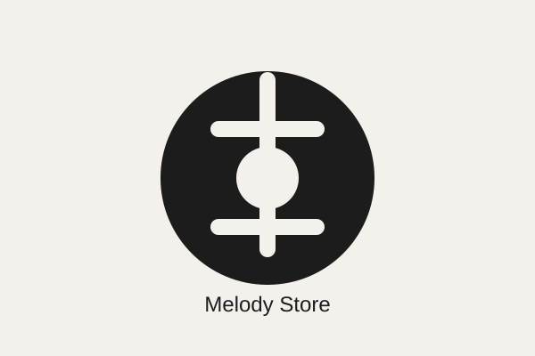

Guitarras

En Melody Store reunimos guitarras, bajos, teclados, baterías e instrumentos de viento para músicos de todos los niveles, desde quienes empiezan hasta quienes tocan en escenarios grandes.
Explorar instrumentosElige una categoría para ver los instrumentos disponibles.

Todo lo que necesitas para mantener y complementar tus instrumentos.
Melody Store nació de la idea de acercar instrumentos de buena calidad a músicos reales: estudiantes que están dando sus primeros pasos, bandas que ensayan cada semana y profesionales que buscan renovar su equipo. Trabajamos con marcas confiables y ofrecemos asesoría para que cada persona encuentre el instrumento adecuado para su nivel y su estilo.
¿Tienes dudas sobre algún instrumento o quieres hacer un pedido especial? Escríbenos.